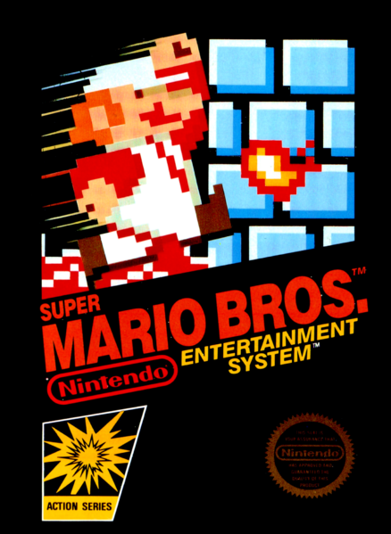
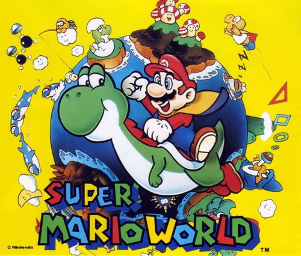
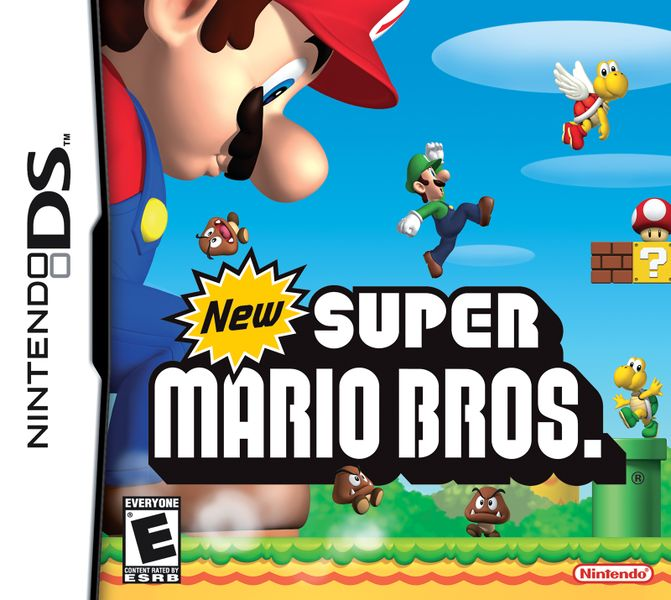
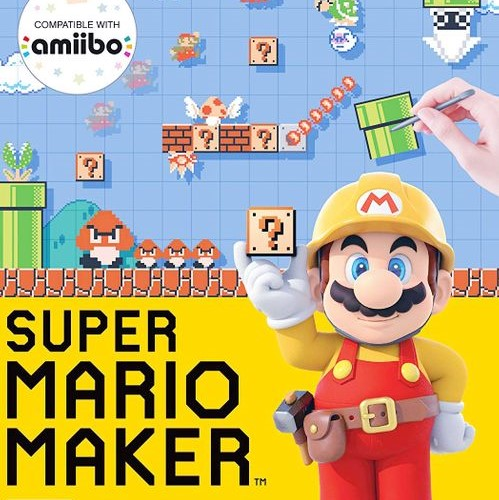

"SUPER MARIO BROS."
슈퍼마리오 브라더스는 슈퍼마리오 시리즈의 기념비적인 첫 작품입니다.
플레이어가 주인공 마리오를 조작해 버섯 왕국을 탐험하며 쿠파에게서 피치공주를 되찾는 것이 목표입니다.
마리오는 원래 동키콩의 악당이었는데, 점프하는 능력밖에 없어 적인 거북이들을 뒤집어 제거해야 했습니다.
하지만 슈퍼마리오 브라더스의 마리오는 점프한 뒤 적을 밟으면 해치울 수 있어 전작보다 기본적으로 강하며 게임중에
버섯, 꽃 등 다양한 파워업 아이템을 얻음으로써 다양한 초능력을 얻어 적을 공격할 수 있습니다.
이 상태의 마리오를 슈퍼 마리오라고 부릅니다. 참고로, 마리오는 슈퍼마리오 게임 개발자들에게 사무실을 빌려주며 닦달한 건물주의 이름이기도 합니다.
초기 개발단계에서는 하드웨어 용량이 부족해 최대한 도트를 재활용했는데,
구름과 수풀 모양이 같고, 적 캐릭터를 새로 만들지 않고 날개를 붙여 팔레트스왑 형식으로 사용한다거나 효과음을 하나로 돌려막기하는 등의 노력이 돋보입니다.
마리오 시리즈에 등장하는 벽돌 등은 전부 버섯왕국 주민들이 쿠파에게 당해서 변한 것이라는 설정이 있었지만 이내 사라진 설정이 되었습니다.
"SUPER MARIO WORLD"
슈퍼마리오 월드는 슈퍼패미컴과 동시에 발매된 런칭작으로,
전작인 슈퍼 마리오브라더스 3와 함께 2D 마리오 사상 최고의 명작으로 꼽힙니다.
적 중 엉금엉금과 와르르, 밤바는 밟았을 때 죽지 않고 뒤집어지며,
뻐끔플라워도 이전까지 토관에 고정된 방식에서 토관에서 갑자기 튀어나오는 방식으로 변경되었습니다.
게임기에 버튼이 하나 더 생겨서 회전점프(스핀점프)도 추가되었는데,
그냥 점프로 밟았을 때 플레이어가 데미지를 입는 적들을 통통 밟으며 이동할 수 있습니다.
일부 적은 한번에 죽이는 것도 가능합니다.
이 외에도 망토마리오가 되는 망토깃털, 파이어마리오가 되는 파이어플라워, 풍선마리오가 되는 파워 벌룬 등의 아이템이 존재합니다.
특징점으로는 타고다닐 수 있는 요시가 추가된 작품이기도 합니다.


"NEW SUPER MARIO BROS."
뉴 슈퍼마리오 브라더스는 슈퍼마리오 월드 이후 3D마리오만 만들다가 16년만에 나온 닌텐도DS 기반 2D마리오 작품입니다.
줄거리는 이전과 같이 납치당한 피치공주를 되찾아 오는 것이지만 이번에는 쿠파가 아니라 쿠파의 아들 쿠파주니어가 피치공주를 납치해 갑니다.
2D작품이지만 그래픽 자체는 3D모델링이 다수 사용되었습니다.
배경음악에 맞춰 적인 엉금엉금, 굼바, 가시돌이, 뽀꾸뽀꾸가 춤을 추기 때문에 갑작스런 움직임, 급정거 등에 죽는 경우가 종종 생깁니다.
골대의 맨 꼭대기를 잡으면 목숨을 1UP해주고 3D그래픽을 이용한 벽차기 등 새로운 기능이 추가되었습니다.
DS 게임이기 때문에 DS가 잘 보급되었던 한국에서도 큰 인기를 누렸습니다.
"피치공주가 (또다시) 납치되었다!"
슈퍼마리오 메이커는 2015년 Wii U 전용으로 발매된 슈퍼 마리오 시리즈의 30주년 기념작이자 게임 제작 게임입니다.
계속해서 납치당하는 피치공주를 찾으러 떠나는 것이 간단한 스토리이고,
슈퍼마리오 맵을 스스로 만들어 플레이하거나 공유가 가능하고, 다른사람이 만든 맵을 플레이해볼 수도 있습니다.
만들기 모드/ 플레이 모드/ 10마리오 챌린지/ 세계의 코스 등 다양한 모드가 준비되어 있습니다.
세계의 코스는 다른 사람이 만든 코스를 랜덤으로 플레이할 수 있는데,
난이도가 극과 극이라 쉬움 모드에서는 손을 놓고 있어도 자동으로 클리어 되는 맵이,
어려움 모드에서는 몇시간을 도전해야 겨우 깰까 말까 한 난이도의 맵이 장악하고 있어 불만의 목소리가 가끔 나옵니다.
이후 슈퍼마리오메이커2가 발매되었고, 2세대부터는 4인 경쟁/협동 온라인 배틀 기능을 지원합니다.
